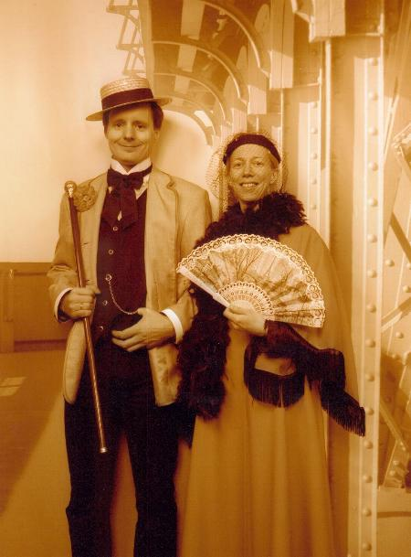

A picture from the wedding:

Jesper Milàn and Inken Müller-Towe were married on the 11th September. Jesper gives this as a rather weak excuse for not attending the SVPCA this year, but he assures me he will have recovered enough to come to PalAss.

They met at the SVPCA in 2002, so this is a bit of a 'family' occasion.
I'm sure you will join me in wishing them all the best on their marriage.